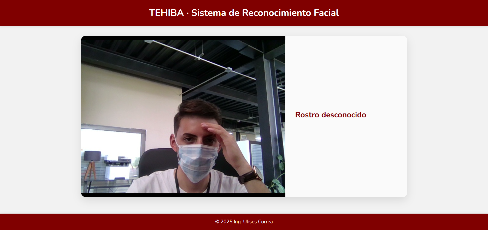
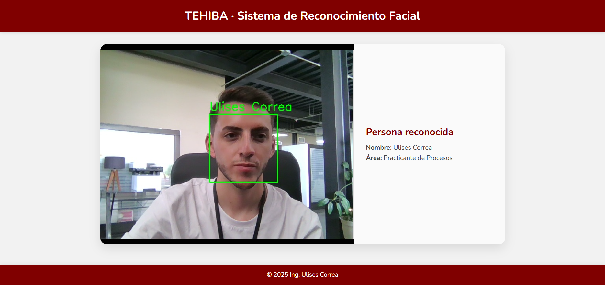

Descripción del Proyecto
Este sistema está desarrollado con Flask y OpenCV para realizar reconocimiento facial en tiempo real usando la cámara web. Detecta y reconoce rostros de personas conocidas comparando con imágenes previamente almacenadas, y muestra la información relevante en una interfaz web sencilla, intuitiva y responsiva.
Las principales características y funciones del sistema son:
- Detección en tiempo real: Captura la imagen de la cámara web y detecta rostros al instante.
- Reconocimiento facial: Compara rostros detectados con las imágenes conocidas almacenadas en la carpeta
known/, identificando a las personas automáticamente. - Interfaz web: Muestra la vista de cámara con cuadros alrededor de los rostros reconocidos y un panel que indica el estado y la información de la persona detectada.
- Actualización dinámica: La información de la persona reconocida se actualiza en tiempo real gracias a la comunicación con el servidor Flask mediante AJAX.
- Fácil expansión: Se pueden agregar más imágenes a la carpeta
known/para ampliar el reconocimiento a más usuarios.
Este proyecto es ideal para sistemas de seguridad, control de accesos o aplicaciones donde se requiere identificación automática mediante reconocimiento facial.
Galería

